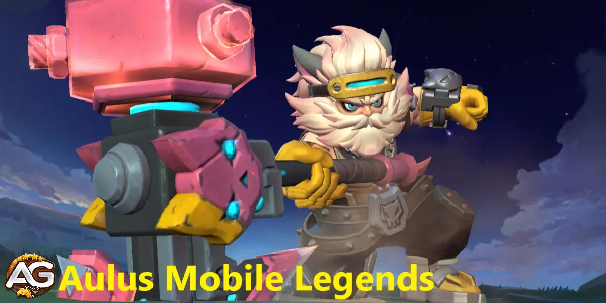
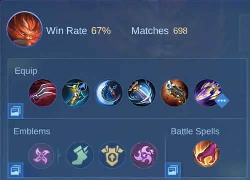

Ilustração de Aulos, um personagem do jogo Mobile Legends, desenvolvido pela Moonton.
Como Jogar de AulosMobile Legends Bang Bang
Por: Alexandre Domingos. .
Características Principais
Detalhes
Função:
Lutador
Atributos:
Dano, Controle de Grupo
Posição na Rota:
Selva
Dificuldade de Jogar:
Média
Taxa de Vitórias:
52,52%
Popularidade:
0,2%
Taxa de Banimento:
0,49%
Tier List de Rota 2024
Rank
Tier List de Selva:
A+
Tier List de EXP:
B
Como Jogar com Aulus em Mobile Legends: Bang Bang - Guia de Estratégia
Aulus é um Lutador versátil que se destaca em causar danos significativos enquanto oferece suporte aos seus aliados. Seu conjunto de habilidades permite que ele seja tanto uma presença formidável nas batalhas quanto um jogador valioso para o time.
Táticas e Estratégia
Início do Jogo
Durante o início do jogo, Aulus é um herói versátil e potente, capaz de enfrentar a maioria dos oponentes. Concentre-se no seguinte:
Controle de Rota: Utilize suas habilidades para dominar sua rota, garantindo que você consiga o máximo de últimos golpes possíveis para ganhar ouro e experiência.
Assédio: Use "Aulus, Avante!" para fechar a distância e assediar os heróis inimigos, forçando-os a jogar de forma defensiva.
Sustentabilidade: Aproveite a redução de dano de "Aulus, Avante!" para resistir aos ataques inimigos e permanecer na rota por mais tempo.
Meio do Jogo
No meio do jogo, o papel de Aulus muda um pouco, pois você começa a focar mais em objetivos e lutas de equipe:
Destruir Torres: Seus Ataques Básicos aprimorados por "O Poder do Machado" fazem de você um empurrador formidável. Concentre-se em derrubar as torres inimigas para pressionar o time adversário.
Posicionamento: Um bom posicionamento é crucial. Fique na linha de frente durante as lutas de equipe para absorver dano e perturbar o time inimigo.
Virar as Lutas de Equipe: Com o tempo e posicionamento adequados, você pode mudar o rumo das lutas de equipe. Use "Fúria Imortal" para causar danos significativos e perturbar as formações inimigas.
Fim do Jogo
No fim do jogo, Aulus deve focar em alvejar inimigos de alta prioridade e maximizar sua produção de dano:
Alvo Prioritário: Tente atacar o carry inimigo (geralmente o atirador ou mago) o máximo possível. Tirar eles da luta pode enfraquecer significativamente o time inimigo.
Sobreviver: Utilize "Aulus, Avante!" e "O Poder do Machado" para manter sua sobrevivência enquanto causa dano.
Coordenação de Equipe: Trabalhe de perto com seu time para garantir que você esteja engajando nas lutas nos momentos certos. Sua habilidade de causar dano e perturbar os inimigos é crucial para garantir a vitória.
Habilidades de Aulus em Mobile Legends: Bang Bang
Aulus é um Lutador dinâmico em Mobile Legends: Bang Bang, conhecido por sua capacidade de causar danos substanciais enquanto oferece suporte valioso ao seu time. Seu conjunto de habilidades é projetado para maximizar sua eficácia em combate, tornando-o uma presença formidável no campo de batalha. Aqui está uma análise estratégica das habilidades de Aulus:
Espírito de Luta - Passiva
Aulus empunha um machado de guerra que intensifica sua proeza de combate à medida que as batalhas progridem. Após causar dano a qualquer inimigo, Aulus acumula uma carga de Espírito de Luta em seu machado a cada segundo durante 3 segundos, até um máximo de 4 cargas. Cada carga aumenta seu Ataque Físico em 3-12 pontos e sua Penetração Física em 1-4 pontos, escalando com o nível de sua Fúria Imortal. Além disso, quando Aulus atinge o máximo de cargas de Espírito de Luta, ele ganha 10% de Velocidade de Movimento extra e aumenta o Dano de Ataque Básico em 27-125 pontos, dependendo de seu nível.
Essa habilidade passiva melhora a eficácia de Aulus em combate, permitindo que ele cause mais dano e se mova mais rapidamente à medida que acumula cargas de Espírito de Luta durante as batalhas.
Habilidade 1: Aulus, Avançar!
Descrição: Aulus remove quaisquer efeitos de lentidão e ganha velocidade de movimento adicional juntamente com redução de dano de ataque.
Uso Estratégico:
Engajamento: Esta habilidade é crucial para iniciar lutas. A velocidade de movimento aumentada permite que Aulus feche a distância entre ele e seus alvos rapidamente, facilitando o engajamento no combate.
Desengajamento: Em situações onde a retirada é necessária, "Aulus, Avante!" pode ajudar Aulus a escapar de encontros perigosos devido ao aumento de velocidade e redução de dano.
Mobilidade: A capacidade de negar efeitos de lentidão torna Aulus menos suscetível ao controle de grupo, melhorando sua mobilidade geral no campo de batalha.
Habilidade 2: O Poder do Machado
Descrição: Aprimora os Ataques Básicos de Aulus, aumentando seu dano.
Uso Estratégico:
Amplificação de Dano: Esta habilidade aumenta significativamente o potencial de dano de Aulus, especialmente em lutas prolongadas onde múltiplos ataques aprimorados podem ser desferidos.
Controle de Objetivos: Use esta habilidade ao atacar torres e outros objetivos para maximizar o dano e pressionar o time inimigo.
Combate Sustentado: Os Ataques Básicos aprimorados são ideais para combates sustentados, permitindo que Aulus cause altos danos de forma consistente ao longo do tempo.
Habilidade 3: Fúria Eterna
Descrição: Aulus libera um ataque poderoso que causa dano físico em uma linha de inimigos.
Uso Estratégico:
Disrupção de Lutas de Equipe: Esta habilidade é perfeita para interromper as formações inimigas durante lutas de equipe. Seu dano linear pode atingir múltiplos alvos, tornando-a eficaz para dispersar inimigos e criar aberturas para seu time.
Limpeza de Ondas: Use "Fúria Imortal" para limpar ondas de minions rapidamente, permitindo que Aulus empurre as rotas e controle o mapa de forma mais eficaz.
Dano de Explosão: O alto dano desta habilidade faz dela uma excelente ferramenta para derrubar rapidamente alvos inimigos importantes, especialmente heróis frágeis da retaguarda.
Combos de Aulus em Mobile Legends
Combinação de Habilidades:
Engaje com Habilidade 1: Use "Aulus, Avante!" para iniciar o combate, aproveitando o aumento de velocidade de movimento para se posicionar de forma otimizada.
Siga com Habilidade 2: Uma vez engajado, ative "O Poder do Machado" para aprimorar seus Ataques Básicos, maximizando sua produção de dano.
Finalize com Habilidade 3: Use "Fúria Imortal" para causar dano significativo a múltiplos inimigos, idealmente atingindo alvos chave na retaguarda inimiga.
Melhor Sinergia de Equipe de Aulus:
Aliados Tanques: Aulus se beneficia de ter um aliado de linha de frente resistente que possa absorver dano e controlar inimigos, permitindo que ele se concentre em causar dano.
Suporte de Controle de Grupo: Aliados com habilidades de controle de grupo podem criar oportunidades perfeitas para Aulus acertar suas habilidades de forma eficaz, particularmente "Fúria Imortal".
Curandeiros/Supports: Heróis de suporte que podem fornecer cura e escudos ajudam Aulus a se sustentar em lutas prolongadas, melhorando sua sobrevivência.
Pontos Positivos e Negativos de Aulus em Mobile Legends: Bang Bang
Pontos Positivos de Aulus
Alta Produção de Dano: Aulus pode causar danos significativos, especialmente com seus Ataques Básicos aprimorados.
Lutador Versátil: Eficaz tanto em papéis ofensivos quanto defensivos.
Forte no Início do Jogo: Domina a rota com superior assédio e sustentabilidade.
Excelente Mobilidade: "Aulus, Avante!" oferece grande mobilidade e opções de fuga.
Impacto nas Lutas de Equipe: "Fúria Imortal" pode interromper formações inimigas e atingir múltiplos alvos.
Controle de Objetivos: Eficaz em empurrar torres e derrubar objetivos.
Boa Sustentabilidade: Seu conjunto de habilidades permite que ele permaneça mais tempo nas lutas com redução de dano e mobilidade.
Escala Bem: Permanece eficaz em todas as fases do jogo.
Pontos Negativos de Aulus
Vulnerável ao Controle de Grupo: Suscetível a ser controlado e focado nas lutas de equipe.
Dependente de Habilidades: Requer uso adequado das habilidades para máxima eficácia.
Posicionamento Crucial: Necessita de bom posicionamento para evitar ser facilmente alvo dos inimigos.
Dependente de Mana: Pode ficar sem mana rapidamente se não for gerenciado corretamente.
Dano de Explosão Moderado: Não é tão forte em dano de explosão comparado a alguns outros Lutadores ou Assassinos.
Dependente de Itens: Precisa de itens-chave para alcançar seu potencial máximo e ser verdadeiramente eficaz.
Alcance Limitado: Principalmente um herói corpo a corpo, requerendo que ele se aproxime dos inimigos.
Requer Coordenação de Equipe: Depende muito do suporte do time para ter o máximo impacto nas lutas.
Como Vencer Aulus em Mobile Legends
Tabela: Counters de Aulus
Nome
Counter Estratégia
Kaja
Use Julgamento Divino para suprimir Aulus e eliminá-lo rapidamente.
Chou
Utilize O Caminho do Dragão para chutar Aulus para fora de posição e isolá-lo.
Franco
Puxe e suprime Aulus com Gancho de Ferro e Caçada Sangrenta para controlá-lo.
Helcurt
Silencie Aulus com Queda da Noite Escura, impedindo-o de usar suas habilidades.
Aurora
Congele Aulus com sua passiva para travá-lo e finalizá-lo com habilidades.
Saber
Use Varredura Tripla para eliminar Aulus antes que ele possa reagir.
Khufra
Interrompa a mobilidade de Aulus com Bola Saltitante e Vingança do Tirano.
Diggie
Use Tempo Reverso e Jornada Temporal para negar o engajamento de Aulus e proteger seu time.
Akai
Use Dança do Furacão para isolar Aulus e afastá-lo de seu time.
Gusion
Elimine Aulus com combos de alto dano antes que ele consiga se sustentar nas lutas.
Melhores Feitiços para Aulus
Feitiços de Batalha Recomendados para Aulus
Feitiço
Motivo
Caçar
Ajuda Aulus a farmar mais rápido, garantir objetivos como buffs e Lord, e obter uma vantagem inicial de ouro.
Inspirar
Aumenta significativamente a velocidade de ataque e o vampirismo, aumentando a produção de dano e a sustentação de Aulus nas lutas.
Executar
Fornece a explosão extra necessária para finalizar inimigos com pouca vida, aumentando o potencial de eliminação de Aulus.
Flash
Oferece mobilidade adicional para escapar ou engajar, permitindo que Aulus se reposicione em momentos cruciais.
Vingança
Reflete dano de volta aos atacantes, aumentando a sobrevivência de Aulus nas lutas e sustentando-o por mais tempo.
Esses feitiços complementam o estilo de jogo de Aulus, aprimorando sua eficiência em farmar, potencial de eliminação, mobilidade e sobrevivência, tornando-o mais eficaz em diversas situações.
Guia de Build Top Global para Aulus em Mobile Legends Bang Bang
Aulus é um lutador poderoso em Mobile Legends Bang Bang, capaz de causar danos significativos e se sustentar em lutas. Aqui está um guia abrangente para a build top global de Aulus, focando em maximizar seu dano e sua sobrevivência.

Build de Selva Top Global para Aulus, Mobile Legends.
Aulus Mobile Legends Build
Garras de Haas
Roubo de Vida: 30% Roubo de Vida Físico
Efeito: Este item fornece um aumento significativo no roubo de vida, permitindo que Aulus se sustente em lutas prolongadas. O efeito de roubo de vida é especialmente útil quando combinado com sua alta velocidade de ataque, garantindo que ele permaneça saudável durante as batalhas.
Bota Veloz
Velocidade de Movimento e Redução de Lentidão: Aumenta a velocidade de movimento e reduz os efeitos de lentidão
Efeito: Essas botas melhoram a mobilidade de Aulus, facilitando o engajamento ou desengajamento das lutas. A redução de lentidão é particularmente benéfica contra efeitos de controle de grupo, permitindo que ele permaneça ágil no campo de batalha.
Fúria do Guerreiro Selvagem
Dano e Chance de Crítico: 65% de Ataque Físico, 25% de Chance de Crítico
Efeito: Fúria do Guerreiro Selvagem aumenta o dano crítico de Aulus, aumentando significativamente seu potencial de explosão. A chance de crítico também complementa seu dano geral, tornando seus ataques mais letais.
Voz do Vento
Velocidade de Ataque, Velocidade de Movimento e Chance de Crítico: 35% de Velocidade de Ataque, 20% de Velocidade de Movimento, 10% de Chance de Crítico
Efeito: Voz do Vento fornece um aumento equilibrado na velocidade de ataque e movimento, melhorando a capacidade de Aulus de perseguir inimigos e causar dano consistente. A chance adicional de crítico amplifica ainda mais seu potencial de dano.
Rugido Maléfico
Perfuração Física: 60 de Ataque Físico
Efeito: Este item concede a Aulus uma perfuração física significativa, permitindo que ele destrua as defesas inimigas. É particularmente eficaz contra oponentes resistentes, garantindo que seus ataques permaneçam impactantes independentemente da armadura do inimigo.
Alabarda dos Mares
Redução de Cura: 80% de Ataque Físico, 20% de Velocidade de Ataque
Efeito: Alabarda dos Mares não só aumenta a velocidade de ataque e o ataque físico de Aulus, mas também reduz a cura recebida pelos inimigos atingidos por seus ataques. Isso a torna um excelente contra-ataque a heróis com fortes habilidades de cura.
Esta build foi projetada para maximizar as forças de Aulus, permitindo que ele domine nas lutas com alto dano e sustentação prolongada. Com esta build top global, você pode liderar seu time à vitória em Mobile Legends Bang Bang.
Emblemas Top Global de Assassino para Aulus Mobile Legends
Benção Selvagem
Efeito: Ganha 4% de velocidade de movimento extra.
Análise: O talento Benção Selvagem é um recurso crucial para Aulus, melhorando significativamente sua mobilidade. Esta velocidade de movimento aumentada permite que Aulus patrulhe o mapa com mais eficiência, persiga inimigos ou escape de situações perigosas. Para um herói que depende de posicionamento para maximizar seu dano, este talento proporciona um impulso vital, facilitando o engajamento ou desengajamento nas batalhas.
Mestre das Armas
Efeito: O Ataque Físico e Poder Mágico obtidos de equipamentos, emblemas, talentos e habilidades são aumentados em 5%.
Análise: Mestre das Armas é um talento excelente para maximizar o potencial de dano de Aulus. Ao aumentar o Ataque Físico e o Poder Mágico de várias fontes, o dano geral de Aulus é amplificado. Isso é particularmente benéfico no meio e final de jogo, quando Aulus acumulou equipamentos e melhorias significativas. O aumento extra de 5% se integra bem com as habilidades e ataques automáticos de Aulus, tornando-o uma ameaça mais formidável no campo de batalha.
Enfurecido
Efeito: Após matar um herói inimigo, recupere instantaneamente 15% do HP perdido e ganhe 20% de Velocidade de Movimento por 3 segundos.
Análise: Enfurecido proporciona a Aulus tanto sustentabilidade quanto mobilidade adicional durante as lutas. A recuperação instantânea de HP após garantir uma eliminação permite que Aulus permaneça na luta por mais tempo, tornando-o menos dependente de recuar para se curar. O aumento de 20% na velocidade de movimento por 3 segundos é particularmente vantajoso para perseguir inimigos em fuga ou reposicionar-se rapidamente no meio do combate. Este talento pode fazer a diferença em lutas de equipe, dando a Aulus a vantagem de garantir múltiplas eliminações e manter sua presença no campo de batalha.
Conclusão do Guia de Aulus
Aulus é um lutador poderoso que pode dominar o campo de batalha com seu dano significativo e capacidades de suporte. Dominar suas habilidades e entender o fluxo do jogo são fundamentais para se tornar um jogador eficaz de Aulus. Foque no controle da lane e no assédio no início do jogo, na destruição de torres e nas lutas em equipe no meio do jogo, e no alvo dos carregadores inimigos no final do jogo. Com as táticas e estratégias certas, Aulus pode levar seu time à vitória.
Explore novas habilidades com nossos heróis em destaque!
Você gostou do nosso Guia do Aulus? Há algo que não entendeu ou gostaria de sugerir mudanças? Convidamos você a se juntar à nossa sessão de comentários na página do Alexandre Games Blog. Não hesite em expressar sua opinião, clarificar suas dúvidas e compartilhar sua sugestões.
 Caçar
Caçar Inspirar
Inspirar Executar
Executar
 Vingança
Vingança


 Gusion
Gusion Dyrroth
Dyrroth Floryn
Floryn